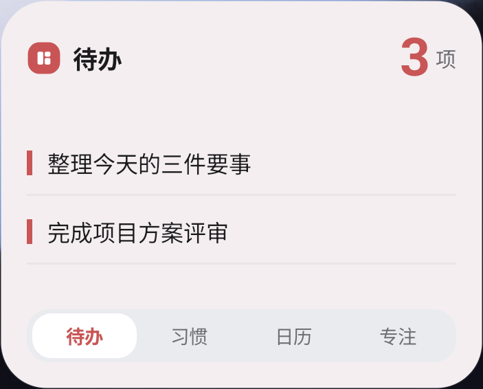
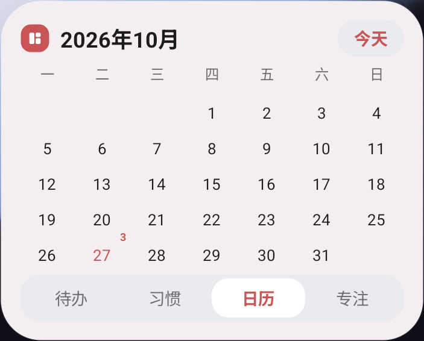
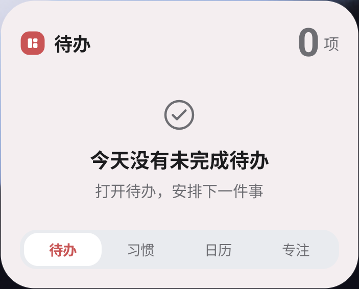
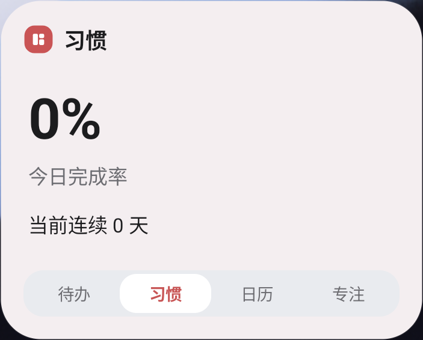
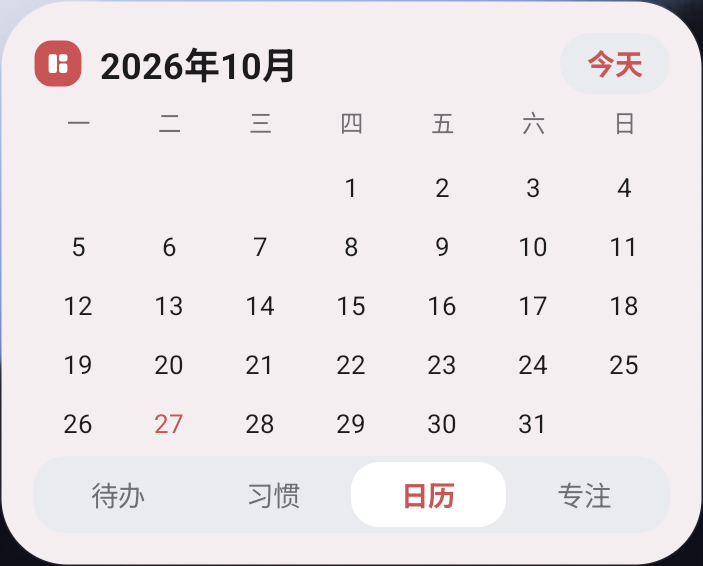
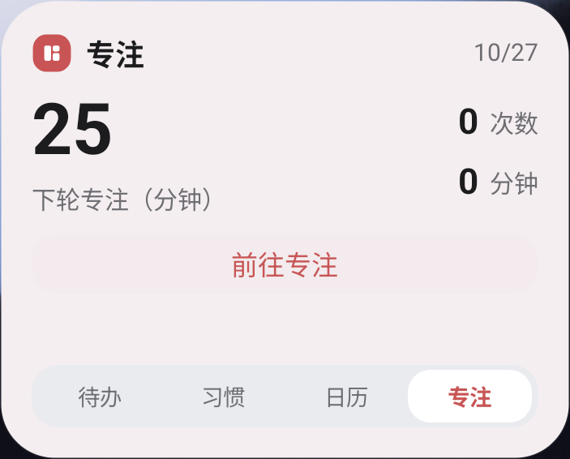
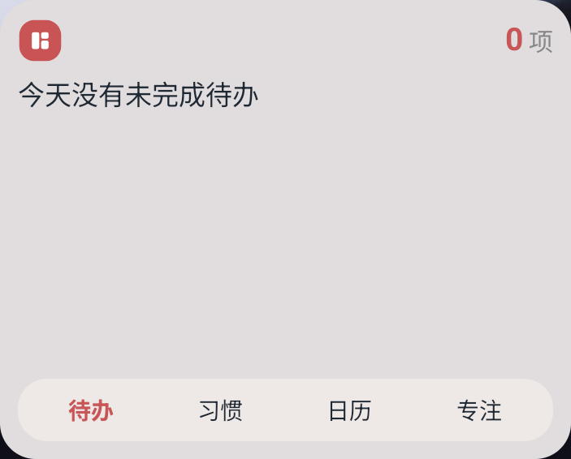
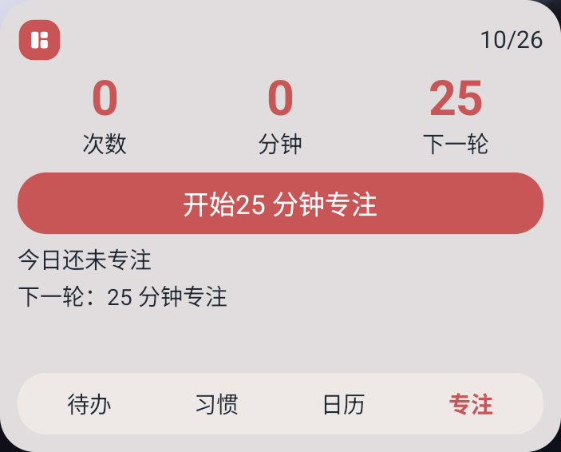

通过离线 TodoProvider 新建三条事项，显示两条完整行，总数为 3。

完整 1–31 日各一次，角标位于日期右上方。
测试事项已按独立 ID 清理：Provider 恢复 0 条、待办恢复空态、日期角标清零。所有底栏截图均保持 Launcher 在前台。
DUOYI · WIDGET DESIGN
四个核心小组件的 Android 实际截图。统一圆角与模块头，空态居中，数据分层，底栏只突出当前分段。原图来自同一个 703 × 566 px 桌面实例，组合图没有重绘组件。

数量与单位分层，空态在正文区域居中。

一个主完成率，配合简短说明与连续天数。

保留完整月份、今天和日期右上角事项数。

左侧主时间，右侧小统计，淡色入口。

空态贴顶，底栏层次较重。
同尺寸，增加模块头和居中空态。

三个同等权重数字和重复摘要。
时间成为主视觉，次数与分钟分层显示。

通过离线 TodoProvider 新建三条事项，显示两条完整行，总数为 3。

完整 1–31 日各一次，角标位于日期右上方。